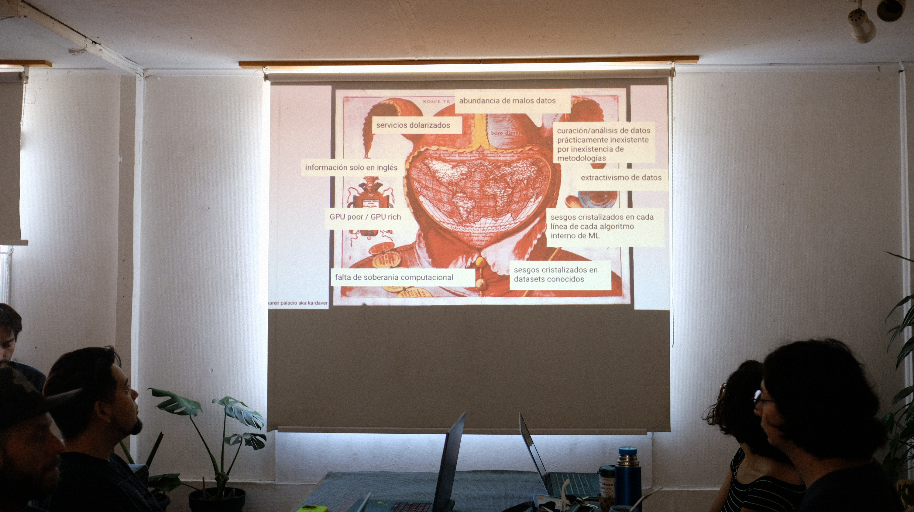
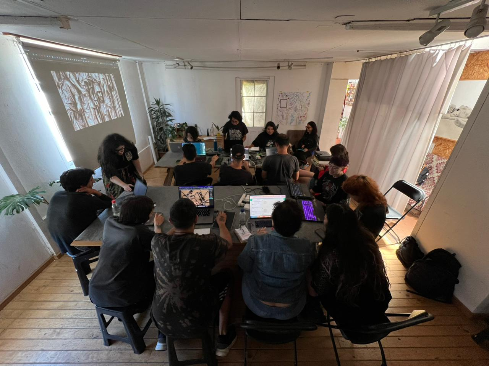
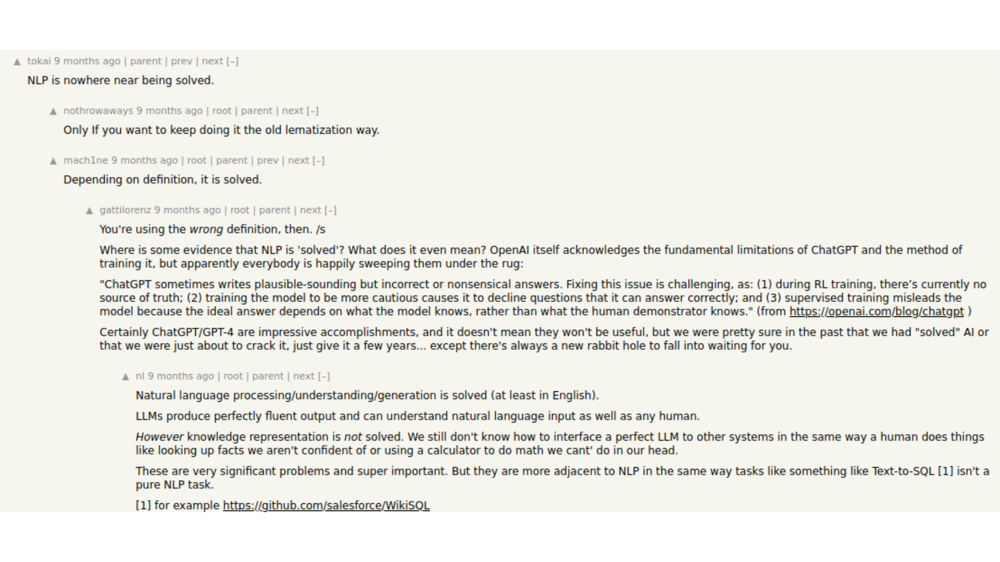

Soberanía computacional
y creación con IA
Read in ENGLISH
Volver a página principal

Introducción
Durante Enero del 2024 estuve en el Festival Latinoamericano de Artes y Tecnologías, organizado por Toda la Teoría del Universo, que se dió en Concepción, Chile.
En este festival hice dos performances de livecoding de visuales y mostré una obra audiovisual durante la apertura del festival. Fui además a dar un primer taller de creación audiovisual con Inteligencia Artificial, con enfoque crítico y atravesado por la búsqueda de Soberanía Computacional en el Sur Global, específicamente en latinoamerica.

Lo pude hacer en colaboración con el Laboratorio Abierto de Inteligencia Artificial (LAIA), que puso a disposición un núcleo de cómputo de 4 GPUs con 24GBs de VRAM cada una.
Fueron dos jornadas intensivas de 4 horas cada una - a sala llena.
Quería que las personas asistentes sientan en el cuerpo la capacidad de cómputo.
el vértigo de por primera vez intentar buscar un techo a la capacidad y tener que esforzarse para encontrarlo...
lo que conlleva: el vértigo del vómito aparentemente infinito de imágenes, la facilidad para explorar, jugar, encontrar, sorprenderse...
Creo que en esas condiciones es que uno siente en el cuerpo el cambio de escala que implica relacionarse con IA generativa - (con suficiente cómputo y almacenamiento) realmente sintetizás más imágenes de las que podés analizar, sobre todo teniendo en cuenta que pequeños cambios se van acumulando, y llegás a resultados sorprendentes rápidamente.
Me interesaba como experimento grupal hacer de a un paso más hacia mayor complejidad, buscando ver y sentir las consecuencias de esto- por ejemplo: querer pasar de generar imágenes a generar videos y que se derrumbe la ilusión de infinitud y de gratuidad de la generatividad... sentir en el cuerpo la capacidad de cómputo que disminuye...
Esperar, haber perdido tiempo por errores en hiperparámetros, volver a esperar - que el tiempo cobre otro valor. Exigirle a la computadora y encontrar techos - el no poder "más allá". Que el grupo encuentre que no puede más allá de videos de 1080x1080px por ejemplo, o que no puede generar videos de más de dos segundos, etc.
Me interesaba dejar escrito algo de lo explicado en ese taller, para que quede como soporte y archivo de mis opiniones actuales al día de hoy Febrero 2024.
 "Esta pequeña maniobra nos va a costar 51 años..."
"Esta pequeña maniobra nos va a costar 51 años..."
El estado actual del ecosistema de IA Generativo
El ecosistema de Inteligencia Artificial en general y no solo el generativo está marcado por la abundancia de malos datos -y una tolerancia generalizada hacia los mismos. Los datos que más abundan son los entregados por las personas que habitan lo digital desde sus celulares y sus computadoras, y están en una relación asimétrica respecto a las corporaciones para la entrega de estos datos. Esta es una de las tantas consecuencias que tiene la ideología del software privativo y las brechas digitales.
Durante un tiempo (pre 2018) se pensaba que el futuro de los modelos de IA "útiles" (vs "de juguete"/"de investigación") iba a ser micro datasets y micro modelos hiper específicos - que contemplen un problema muy particular. Pero ya hace unos años que el rumbo de la IA viró. Ahora se apuesta a la extracción, mercantilización y acumulación de grandes cantidades de datos basura - esperando que la cantidad permita que de entre la basura emerjan "naturalmente" los comportamientos promedios ("correctos"/"verídicos"). Por ejemplo si tengo un conjunto de datos de todas las noticias de un país durante un año, contemplando distintos medios con distintas bajadas de linea editoriales, el prejuicio ideológico estocástico es que la "verdad" está "en el medio" de todas estos puntos de vista. Esta actitud obvía las dinámicas de los discursos en el internet - y cómo la hegemonía de medios se replica en lo digital.
Más allá de eso, la cantidad de datos es tan grande que el campo de IA en sí no ha podido todavía generar metodologías para el análisis ni la curaduría de los mismos - pero esto no frena de ningún modo la heurística de "Más parámetros implica mejor modelo". El año pasado participé en una mesa de debate de un workshop nacional de NLP - y uno de los puntos de debate era justamente la medición y el benchmarking: ¿cómo podemos poner en el medio de sistemas que el público tiene que usar algo que no sabemos cómo podríamos saber cómo funciona?. Obviamente, todavía no podemos responder eso.
Finalmente y como consecuencia los datasets contienen un grado desconocido/no-conocible de basura en los mismos, siendo un caso paradigmático el descubrimiento en 2023 de la presencia de imágenes de abuso sexual infantil en el dataset open source LAION de 2021 - dataset en el que se basan la gran mayoría de modelos generativos de texto a imagen y cuya liberación constituyó un hito en el ecosistema open source de IA generativo.
Cada uno de estos factores se establecen como cristalizaciones de los sesgos pre-existentes de un conjunto de personas que se encuentran en lugares de toma de decisiones. Pero la cristalización de sesgos es -nuevamente- un campo poco explorado. Por ejemplo se ha observado que ChatGPT en vez de repetir los patrones de extremismo presentes en ciertas sociedades, los amplifica.
“Responses from prompted “persona” profiles in ChatGPT produce measures of partisan and racial affective polarization that are seven times larger than the average opinion of humans who possess the same attributes as the prompted personas”.
-----
"Respuestas del perfil de una "persona" prompteada [ingresadas con texto al sistema] en chatGPT produce niveles de polarización afectiva partidarias y raciales siete veces mayores que la opinión promedio de los humanos que poseen los mismos atributos que las personas prompteadas [ingresadas con texto al sistema]".
Artificially Precise Extremism: How Internet-Trained LLMs Exaggerate Our Differences” de Bisbee, J., Clinton, J., Dorff, C., Kenkel, B., & Larson, J. (https://osf.io/preprints/socarxiv/5ecfa/ ), publicado el 4 de Mayo de 2023
Esto presenta un escenario exponencialmente peor en cuanto a amplificación de sesgos ante el uso de modelos de IA como máquinas de generación de datos sínteticos: esto es cuando se entrena un modelo con lo que otro modelo genera.
Cuando no se usan modelos de IA para generar de manera inmedible datos a dar de comer a otros modelos inmedibles, las corporaciones del Norte Global están extrayendo y recolectando datos de personas de todo el mundo. Luego, si querés interactuar con los modelos resultantes de nuestros inputs agregados las corporaciones y sus instituciones generan literatura, documentación y servicios en inglés, y con precios en dólar americano - en estrategias de negocio abiertamente segregantes para países como Argentina y que tienen como consecuencia el aumento de las brechas digitales.
Es tan extrema la asimetría que se acuñó el concepto Pobre de GPU/Rico de GPU (GPU Poor/ GPU Rich). La primera vez que leí sobre este concepto fue en Twitter (obviamente), en donde una persona se burlaba de los intentos de investigadores "GPU Poor" - decía algo así como "Sus esfuerzos son inútiles - les serviría mejor dejar de perder el tiempo intentando por la vía GPU Poor. Simplemente compra más cómputo!" Just buy more compute. Let them eat cake.
Esto es una pintura del estado generalizado de falta de soberanía computacional de los pueblos del Sur Global.

Lo que la IA Generativa puede ser
Si tuviéramos los medios (y los compartiéramos):
la Inteligencia Artificial nos permite darle una segunda-tercera-enésima vida a materiales digitales o digitalizables. Todo texto, imagen, fotografía, video, sonido, etc se puede transformar, enlazar, ficcionalizar, enmarcar, (ficcionalmente) continuar, etc.
De hecho hay un gran potencial de la IA como registro de cosas de las cuales no hay registro por cuestiones geopolíticas - o los registros son de dificil acceso. Yendo un paso más allá, en vez de pensar en imágenes podemos pensar en máquinas de creación de archivos especulativos.
Ante las dictaduras, desapariciones, censuras, silenciamientos - un modelo de IA es accionable y se da a la composición con otros modelos. Si nos compartiéramos los modelos que creamos nos estaríamos compartiendo la posibilidad de seguir creando.
Es que la IA es un portal hacia abstracciones de más alto orden:
- generación de generadores
- invención de la invención
(resonando con Ada Lovelace)
El Machine Learning es además un lugar fértil para relacionamientos no antropocéntricos con lógicas sub-simbólicas y no-simbólicas → profundizando en lo digital y entendiendo lo digital como experiencia compartida entre entes con distintos sistemas perceptivos.
Por nuestras diferencias, el ML es un campo de descubrimiento continuo de fisuras técnicas fértiles Capacidades y técnicas enteras se "descubrieron" como efecto secundario de arquitecturas, por ej el fine tuning, Few Shot Learning, etc.
Todo el tiempo se está descubriendo que los modelos van más allá de lo esperado por sus creadores humanos - para bien (fine tuning) como para mal (infinite prompt injection y otras vulnerabilidades en los sistemas computacionales que existen por primera vez en la historia)
Y no solo eso, sino que como los Pobres de GPU somos la mayoría, hay continuo avance desde el software libre para la realización en situación de pobreza de GPU => llama.cpp corre a 1.18 tok/s en single CPU con 4GB de ram
Tal vez para algunes también les resulte interesante la cercanía con lo desconocido: el hecho es que explorando los espacios latentes de modelos por nacer se pueden encontrar resultados visuales/sonoros/interactivos -realmente- nunca antes experimentados/percibidos - de los cuales todavía no existe un libro de cómo decodificar.
Cómputo y Capacidad de cómputo
Vale la pena detenerse a pensar qué es y en qué sentido está relacionado al PODER (en un sentido geopolítico).
Hablando mal y pronto -
Computar es resolver (o intentar resolver) un problema - a partir de medios automatizados.
Por ej. tengo muchos datos y quiero sacar conclusiones sobre ellos - y no las puedo ver a simple vista. En ese caso mi problema es: existe información embebida y patrones ocultos en mis datos. Necesito computar.
Obviamente computar también es explorar y confirmar hipótesis.
Además a través del cómputo interconectamos - hacer dialogar distintos sistemas, lenguajes, medios.
En medio de todo esto estamos creando - computar es construir algo nuevo.
Obviamente las distinciones y consecuencias filosóficas de volver estricta o relajar partes de estas definiciones de cómputo son causa para miles de papers de filosofía de la tecnología - < a href="http://www.scielo.org.ar/pdf/cts/v7n19/v7n19a08.pdf" target="_blank"> como Convergencias y divergencias en la noción de computación, que recomiendo
Siempre hagamos un ida y vuelta entre lo personal y lo comunitario: pensemos en una persona sola computando, y pensemos además en conjuntos más grandes - entonces el software puede ser pensado como
- configurador de saberes de una población,
- como actor clave en la definición de posibilidades de accionar en sociedad,
- como dispositivo de generación y liberación de conocimiento
Como toda pretensión de solución de problemas implica un atreverse a balbucear e iterar sobre un conjunto de soluciones, y pensar un más allá de lo que existe actualmente hay una relación intrínsica entre el cómputo y el imaginario de una comunidad.
Si computar es resolver un problema, el poder de cómputo es la capacidad de un conjunto de personas de resolver problemas.
Mientras más complejo es el problema (por ejemplo si implica analizar muchos datos) más nos vamos a encontrar con limitaciones en nuestro conocimiento pero también limitaciones físicas - tal vez nos encontremos con que la capacidad o poder de cómputo que tenemos disponible no nos alcanza. No podemos literalmente correr el código que necesitamos correr.
El poder de cómputo que tenemos disponible en un momento se configura como un techo sobre:
- cantidad de problemas que podemos intentar resolver
- complejidad de los problemas que elegimos
- escalabilidad de la solución - a cuántas personas le impactará nuestra solución
- iteración propia de los procesos creativos inmanentes a la resolución de problemas
Para ir a lo concreto, lo material a nivel componentes de computadora que influye para entender nuestro poder de cómputo es:
modelo del procesador de una computadora (por ej procesador i7, o un Atom, o un AMD Ryzen)
cantidad de cores de cómputo (por ej 4, o 32)
presencia y tipo de GPU (por ej integrada o dedicada. Si es dedicada, qué empresa la fabricó y con cuánta vRAM)
cantidad de RAM (por ej 3GB o 32GB)
(es adyacente pero influencia la cantidad y tipo de memoria - en computación decimos que "la memoria es barata")
Obviamente el poder de cómputo es un recurso inaccesible-escaso y afectado por las brechas digitales y brechas socio-geo-políticas
Consecuencias de esto son por ej:
- nos limita a generar con modelos preexistentes (es decir con los imaginarios de otras comunidades)
- nos limita a generar imágenes/videos/sonidos/etc de baja resolución
- nos limita a generar pocas imágenes/videos/sonidos/etc por hora
- nos limita a usar plataformas cajanegristas
- nos limita a usar sin entender
- etc
En cambio.
 Quienes tienen poder de cómputo deciden qué problemas son importantes y merecen ser solucionados. Además al hacer esto definen el problema y las aristas que lo constituyen. Simultaneamente definen bajo qué criterio se considera "solucionado" un problema. Deciden cómo y cuándo se solucionan.
Quienes tienen poder de cómputo deciden qué problemas son importantes y merecen ser solucionados. Además al hacer esto definen el problema y las aristas que lo constituyen. Simultaneamente definen bajo qué criterio se considera "solucionado" un problema. Deciden cómo y cuándo se solucionan.
Estas personas toman decisiones de diseño constantemente. Vale la pena aclarar para la gente que no pasó por la industria del software, esto es literal: en el cómputo se hace según criterios explícitos, no en palabras secretas encriptadas.

Doctor en Ciencias de la Computación en una discusión claramente dirigida hacia la comunidad del Norte Global. Reflexionando e intentando encontrar beneficios técnicos para el funcionamiento de modelos en inglés si incluyen "otros" lenguajes (descriptos como "no inglés"). Para ser justa más abajo, al final, escribe un párrafo corto sobe inclusividad.
Una aclaración de ese thread muestra otra forma en que los sesgos se cristalizan y cómo los sesgos van más allá de los conjuntos de entrenamiento. Los algoritmos mismos, internos a los procesos de IA están optimizados para el inglés.
Otro ejemplo claro de cómo se habla de esto explícitamente son las afirmaciones comunes del tipo:
"language is solved" ("el lenguaje está solucionado")
"image generation is solved" ("el lenguaje está solucionado")


Litros de tinta digital corren en el internet discutiendo hasta qué punto el "problema del lenguaje" "se solucionó". Se habla explícitamente de esto como soluciones de problemas, lo que queda implícito es que el "lenguaje" es en realidad inglés y la generación de "imágenes" es en realidad la sintesis fotográfica.
Y es porque veo estas dos caras que me interesa la Soberanía Computacional del Sur Global y pienso:
Tácticas
Tenemos que diseñar estrategias para aumentar nuestra capacidad de cómputo conjunta
intentando no reproducir las dinámicas que venimos padeciendo.
esto implica aprender a usar eficientemente una computadora (la nuestra o una remota)
aprender a compartir recursos (y no ser tacaños con lo poco que tenemos)
aprender a buscar herramientas optimizadas para nuestro hardware y contribuir con la mayoría global Pobres de GPU
Y en el medio juntarnos y compartir.
Como recordatorio y para que no nos olvidemos. Acá Mary Andrada soldando a mano GPUs para las primeras computadoras fabricadas en Argentina - la empresa cordobesa MicroSistemas: